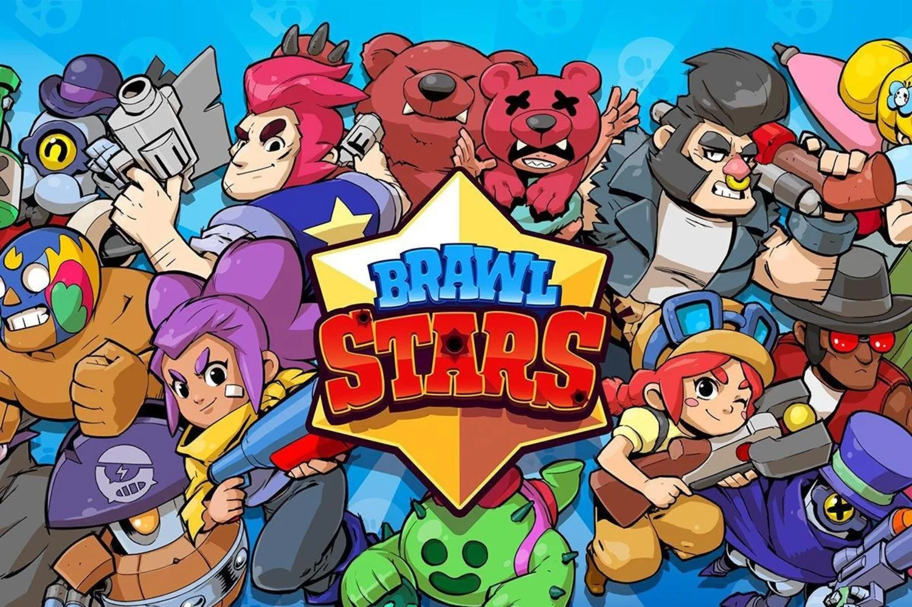

Brawl Stars, to gra stworzona przez Supercell, jest jedną z najbardziej porywających gier na rynku mobilnym. Gra łączy w sobie dynamiczną rozgrywkę, wciągający tryb wieloosobowy oraz kreatywność, tworząc unikalne i pasjonujące doświadczenia dla graczy. Jednym z najważniejszych elementów Brawl Stars jest różnorodność bohaterów, nazywanych "Brawlerami" (zadymiarzami). Każdy z nich ma unikalne umiejętności, co pozwala na rozwijanie różnych strategii podczas rozgrywki. Dodatkowo, regularne aktualizacje gry wprowadzają nowych Brawlerów, mapy i tryby gry, utrzymując świeżość rozgrywki i zapewniając graczom ciągłą dawkę emocji.
Grafika gry zasługuje na pochwałę, jest ona kolorowa, animacje są płynne, a postacie są urocze i pełne charakteru. Dźwięki i efekty dźwiękowe dodają grze dynamizmu i uczucia rzeczywistej rywalizacji.
Tryby gry, takie jak "Gem Grab" (zbiory klejnotów), "duo" (starcie w trybie duo), "solo" (starcie w trybie solo) czy "Brawl Ball" (zadyma), zapewniają różnorodność i możliwość dostosowania rozgrywki do preferencji graczy. Ponadto, system drużynowy oraz możliwość grania z przyjaciółmi sprawiają, że Brawl Stars jest nie tylko wciągający, ale także społecznościowy.
Jednakże, jak w przypadku wielu darmowych gier mobilnych, istnieje opcja mikropłatności, co może wpływać na balans rozgrywki dla graczy niechętnych wydawaniu pieniędzy. Mimo to, Supercell stara się utrzymać uczciwą równowagę między graczami płacącymi, a niepłacącymi, aby zapewnić uczciwą rozgrywkę dla wszystkich.
Podsumowując, Brawl Stars to świetnie zrealizowana gra mobilna, która oferuje niekończącą się rozrywkę dzięki różnorodności postaci, trybów gry i możliwościom wspólnej zabawy z przyjaciółmi. Choć istnieje opcja mikropłatności, nadal stanowi jedno z najlepszych doświadczeń w gatunku gier wieloosobowych na urządzenia mobilne.